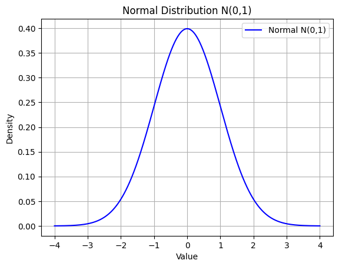
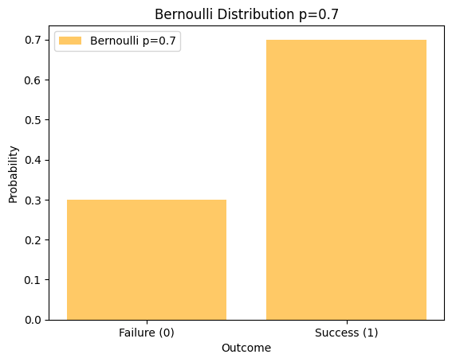
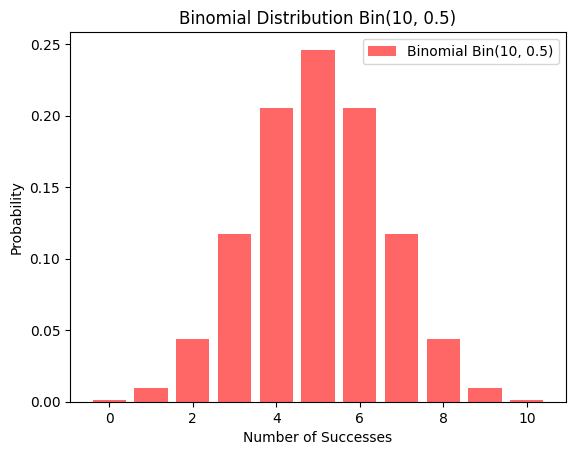
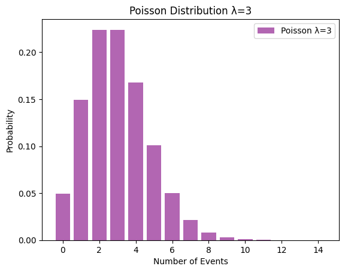
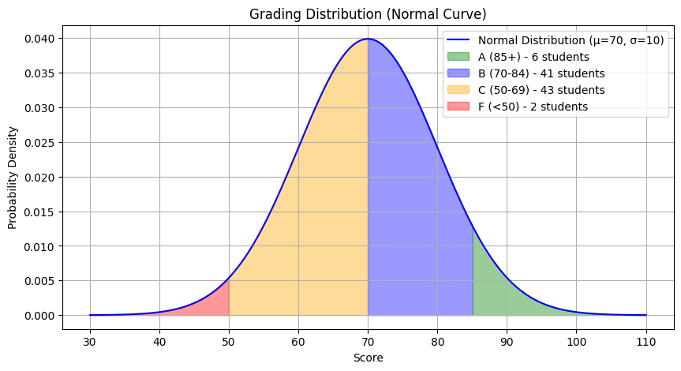

from sympy.stats import *
from sympy import symbols, Eq, simplify
import matplotlib.pyplot as plt
import numpy as npSympy Stats
Stats
Introduction
SymPy Stats is a powerful module in the SymPy library that provides symbolic tools for probability and statistics in Python. It enables the algebraic manipulation of random variables, making it perfect for probabilistic modeling and statistical analysis.
In this blog, we’ll explore the key features of SymPy Stats, including how to define random variables, compute probabilities, and analyze statistical properties such as expectation, variance, and more. Additionally, we’ll dive into important concepts like conditional probability, independence, and other advanced topics in symbolic statistics.
Installation and Setup
To use SymPy Stats, ensure that SymPy is installed. It can be installed using:
pip install sympyNow, import the necessary modules:
Key Features and Explanations with Code Examples
SymPy Stats provides functionalities for:
Defining Random Variables and Probablity Computation
Standard Normal Distribution
We define a random variable ‘Norm’ that follows a normal distribution with a mean (𝜇) = 0 and standard deviation σ=1, which makes it a standard normal variable.
Then, P(Norm>0) calculates the probability that ‘Norm’ is greater than 0. This is the area under the normal curve to the right of 0.
Norm = Normal('Norm', 0, 1)
print("The probablity of normal distribution is:")
P(Norm > 0)The probablity of normal distribution is:\(\displaystyle \frac{1}{2}\)
Exponential Distribution
We define a random variable ‘Exp’ that follows an exponential distribution with a rate parameter λ=1, which makes it an exponential variable with mean μ=1.
For a continuous random variable, calculating P(Exp=1) gives the probability that ‘Exp’ is exactly equal to 1. However, since the exponential distribution is continuous, the probability of ‘Exp’ being exactly 1 is 0.
On the other hand, P(0<Exp<1) calculates the probability that ‘Exp’ lies between 0 and 1. This is the area under the curve between 0 and 1.
Exp = Exponential('Exp', 1)
print("The probability Exp = 1 is:")
P(Eq(Exp, 1))The probability Exp = 1 is:\(\displaystyle 0\)
print("The probability that 0 < Exp < 1 is:")
P((Exp > 0) & (Exp < 1))The probability that 0 < Exp < 1 is:\(\displaystyle 1 - e^{-1}\)
Uniform Distribution
We define a random variable ‘Uni’ that follows a uniform distribution between 0 and 10, meaning it has equal probability across this range.
Then, P(Uni<5) calculates the probability that ‘Uni’ is less than 5. This probability is proportional to the length of the interval [0,5] relative to the total range [0,10], representing the area under the uniform curve from 0 to 5.
Uni = Uniform('Uni', 0, 10)
print("The probability that Uni < 5 is:")
P(Uni < 5)The probability that Uni < 5 is:\(\displaystyle \frac{1}{2}\)
Bernoulli Distribution
We define a random variable ‘Bern’ that follows a Bernoulli distribution with probability p=0.5. It has two outcomes: 1 (success) with probability ‘𝑝’, and 0 (failure) with probability ‘1−p’.
Then, 𝑃(Eq(Bern,1)) calculates the probability that ‘Bern’ equals 1. This represents the probability of success in a Bernoulli trial.
Bern = Bernoulli('Bern', 0.5)
print("The probability that Bern = 1 is:")
P(Eq(Bern, 1))The probability that Bern = 1 is:\(\displaystyle 0.5\)
Binomial Distribution
We define a random variable ‘Bin’ that follows a Binomial distribution with parameters n=10 and p=0.5, meaning there are 10 independent Bernoulli trials, each with a probability p=0.5 of success.
Then, P(Eq(Bin,5)) calculates the probability that ‘Bin’ equals 5, which represents the probability of having exactly 5 successes out of the 10 trials and is computed using the Binomial probability mass function.
Bin = Binomial('Bin', 10, 0.5)
print("The probability that Bin = 5 is:")
P(Eq(Bin, 5))The probability that Bin = 5 is:\(\displaystyle 0.24609375\)
Poisson Distribution
We define a random variable ‘Poiss’ that follows a Poisson distribution with a mean λ=3.
Then, P(Eq(Poiss,2)) calculates the probability that ’Poiss’equals 2, which represents the probability of exactly 2 events occurring in the given interval and is computed using the Poisson probability mass function.
This gives the likelihood of observing exactly 2 events when the average number of events is 3.
Poiss = Poisson('Poiss', 3)
print("The probability that Poiss = 2 is:")
P(Eq(Poiss, 2))The probability that Poiss = 2 is:\(\displaystyle \frac{9}{2 e^{3}}\)
Expectation and Variance
Expectation (E): The expectation, or mean, of a random variable represents its average value over many trials. It gives the central tendency of the distribution.
Variance: Variance measures how much the values of a random variable deviate from the mean. A higher variance indicates a wider spread, while a lower variance means the values are closer to the mean.
For a normal distribution, the expectation is the mean (μ), and the variance is the square of the standard deviation (σ²).
print("The expectation and variance of normal distribution is:")
E(Norm), variance(Norm)The expectation and variance of normal distribution is:(0, 1)print("The expectation and variance of exponential distribution is:")
E(Exp), variance(Exp)The expectation and variance of exponential distribution is:(1, 1)print("The expectation and variance of uniform distribution is:")
E(Uni) ,variance(Uni)The expectation and variance of uniform distribution is:(5, 25/3)print("The expectation and variance of Bernoulli distribution is:")
E(Bern), variance(Bern)The expectation and variance of Bernoulli distribution is:(0.500000000000000, 0.250000000000000)print("The expectation and variance of Binomial distribution is:")
E(Bin), variance(Bin)The expectation and variance of Binomial distribution is:(5.00000000000000, 2.50000000000000)print("The expectation and variance of Poisson distribution is:")
E(Poiss) , variance(Poiss)The expectation and variance of Poisson distribution is:(3, 3)Moment
Moments are statistical measures that help describe the shape and properties of a probability distribution.
Raw Moments: The nth moment about the origin is given by E(X ^ n ) and helps understand the overall magnitude of the values.
Central Moments: Moments calculated about the mean describe variability and shape characteristics of the distribution.
First Moment (Expectation): Represents the average or central value of the distribution.
Second Moment (Variance): Measures the spread of the distribution around the mean.
Third Moment (Skewness): Describes the asymmetry of the distribution—whether it leans more to the left or right.
Fourth Moment (Kurtosis): Indicates the heaviness of the tails compared to a normal distribution, helping assess the likelihood of extreme values.
Moments offer a more detailed understanding of a distribution’s shape beyond just mean and variance.
moment(Norm, 3) # Third moment of Normal Distribution\(\displaystyle 0\)
moment(Exp, 4) # Fourth moment of Exponential Distribution\(\displaystyle 24\)
moment(Poiss, 2) # Second moment of Poisson distribution\(\displaystyle 12\)
skewness(Exp) # Skewness of Exponential Distribution\(\displaystyle 2\)
kurtosis(Exp) # Kurtosis of Exponential Distribution\(\displaystyle 9\)
Entropy
Entropy is a measure of uncertainty or randomness in a probability distribution. In this context, it quantifies the uncertainty associated with the standard normal distribution represented by the variable Norm.
H(X): This line calls the function H() from sympy.stats, which is used to calculate the entropy of a random variable.
H(Norm)\(\displaystyle \frac{\log{\left(2 \right)}}{2} + \frac{1}{2} + \frac{\log{\left(\pi \right)}}{2}\)
This line of code calculates the entropy of an exponential distribution.
H(Exp)\(\displaystyle 1\)
This line of code calculates the entropy of a Bernoulli random variable.
H(Bern)\(\displaystyle 0.693147180559945\)
Density
This is a function from sympy.stats that is used to obtain the probability density function (PDF) of a random variable. The PDF describes the likelihood of a random variable taking on a specific value. this line of code is asking for the mathematical formula that describes the shape of the standard normal distribution
density(Norm)\(\displaystyle \operatorname{NormalDistribution}\left(0, 1\right)\)
density(Exp)\(\displaystyle \operatorname{ExponentialDistribution}\left(1\right)\)
density(Poiss)\(\displaystyle \operatorname{PoissonDistribution}\left(3\right)\)
Cumulative Distribution Function
The cdf(Exp) line is calculating this probability for the exponential distribution represented by Exp. The exponential distribution is often used to model the time until an event occurs.
cdf(Exp)\(\displaystyle \left( z \mapsto \begin{cases} 1 - e^{- z} & \text{for}\: z \geq 0 \\0 & \text{otherwise} \end{cases} \right)\)
The cdf of Bernoulli Distribution can be shown as:
cdf(Bern){0: 0.500000000000000, 1: 1.00000000000000}Quantile
The code is asking for the value (on the x-axis of the standard normal distribution) below which 95% of the data falls. This is also known as the 95th percentile or 0.95 quantile. Imagine the bell curve of the standard normal distribution – this code finds the point where 95% of the area under the curve is to the left of that point
quantile(Norm, 0.95)\(\displaystyle \left( p \mapsto \sqrt{2} \operatorname{erfinv}{\left(2 p - 1 \right)} \right)\)
quantile(Exp, 0.95)\(\displaystyle \left( p \mapsto - \log{\left(1 - p \right)} \right)\)
Conditional Probability
This code snippet calculates the probability that a random variable, represented by Norm, falls within a specific range given that it’s part of a standard normal distribution.
P(Norm > 0, Norm < 2)\(\displaystyle - \frac{\sqrt{2} \pi e^{2} \operatorname{erf}{\left(\sqrt{2} \right)}}{- \sqrt{2} \pi e^{2} - \sqrt{2} \pi e^{2} \operatorname{erf}{\left(\sqrt{2} \right)}}\)
This line calculates the probability that the random variable Exp (which was previously defined as an Exponential distribution) falls between the values of 2 and 5.
P(Exp > 2, Exp < 5)\(\displaystyle - \frac{1}{-1 + e^{5}} + \frac{e^{3}}{-1 + e^{5}}\)
This code calculates the probability that the random variable Bin is greater than 3 and less than 8.
P(Bin > 3, Bin < 8)\(\displaystyle 0.818181818181818\)
This code calculates the probability that the random variable Poiss is greater than 1 and less than 4.
P(Poiss > 1, Poiss < 4)\(\displaystyle \frac{9}{13}\)
This code aims to find the likelihood of these two events occurring simultaneously:
A randomly selected value from a standard normal distribution being greater than 0. A randomly selected value from an exponential distribution being greater than 1.
P(Norm > 0, Exp > 1)\(\displaystyle \frac{1}{2}\)
Independence and Dependence of Random Variables
If the function returns True, it indicates that the variables are considered independent, meaning their outcomes don’t affect each other. If it returns False, it suggests there might be some dependence or relationship between the variables.
independent(Norm, Exp)Trueindependent(Bern, Bin)Truedependent(Bern, Poiss)FalseCovariance and Correlation
Covariance
Covariance measures how two random variables change together. It is calculated as:
Cov(𝑋,𝑌)=𝐸[(𝑋−𝐸[𝑋])(𝑌−𝐸[𝑌])]
Norm_1 = Normal('Norm', 0, 1) # Normal distribution with mean=0, std=1
Norm_2 = Normal('Exp', 0, 2) # Normal distribution with mean=0, std=2
cov = covariance(Norm_1, Norm_2)
print("Covariance:", cov)Covariance: 0Correlation
Correlation normalizes covariance by the standard deviations of the variables, giving a value between -1 and 1:
Corr(𝑋,𝑌)=Cov(𝑋,𝑌)/(𝜎𝑋𝜎𝑌)
Norm_1 = Normal('Norm', 0, 1) # Normal distribution with mean=0, std=1
Norm_2 = Normal('Exp', 0, 2) # Normal distribution with mean=0, std=2
corr = correlation(Norm_1, Norm_2)
print("Correlation:", corr)Correlation: 0Note: 1. If X and Y are independent, covariance(X, Y) will return 0. 2. correlation(X, Y) normalizes the covariance to get a value between -1 and 1.
Covariance between Binomial and Poisson
Bin = Binomial('Bin', n=10, p=0.5) # Binomial(n=10, p=0.5)
Poiss = Poisson('Poiss', 3) # Poisson(λ=3)
cov = covariance(Bin, Poiss)
print("Covariance:", cov)Covariance: 0Note: 1. If Bin and Poiss are independent, their covariance is 0. 2. By default, SymPy assumes independence, so covariance(Bin, Poiss) returns 0.
Transformations of Random Variables
If X is a random variable and Y = g(X) is a transformation of X, then: * The new distribution of Y can be derived symbolically. * SymPy can compute the expectation, variance, and density function of Y.
Example: Linear Transformation Y = aX + b
If X ~ N(0,1) (Standard Normal), and we define Y=2X+3, then:
E[Y] = E[2X+3] = 2 E[X] + 3
Var(Y) = Var(2X+3) = 2*2 Var(X) = 4
Norm = Normal('Norm', 0, 1)
Transformed_var = 2 * Norm + 3
Expect = Expectation(Transformed_var).doit()
Var = variance(Transformed_var).doit()
pdf_transformed_var = density(Transformed_var)(symbols('y'))
print("E[Transformed_var]:", Expect)
print("Var[Transformed_var]:", Var)
print("Density Function:")
simplify(pdf_transformed_var)E[Transformed_var]: 3
Var[Transformed_var]: 4
Density Function:\(\displaystyle \frac{\sqrt{2} e^{- \frac{\left(y - 3\right)^{2}}{8}}}{4 \sqrt{\pi}}\)
Sampling from Distributions
Significance of Sampling from a Distribution
Sampling from a probability distribution is important because it allows us to simulate, estimate, and analyze real-world data where randomness plays a role.
For Example:
Understanding Random Behavior 1. When you sample from a Normal(0,1) distribution, for example, you get values mostly centered around 0 with some variation. 2. If you sample from a Poisson(λ=3), the numbers tend to be small integers around 3. 3. This helps in understanding how real-world processes behave (e.g., height distribution, number of customer arrivals per minute).
Checking Theoretical vs. Empirical Distributions
If we sample a large number of values, we can plot a histogram and compare it with the expected probability distribution.
Example: Sampling 1000 values from N(0,1) should give a bell-shaped curve.
Sampling from a Standard Normal Distribution
#Normal distribution X ~ N(0,1)
Norm = Normal('Norm', 0, 1)
print("Single Sample:", round(sample(Norm),2))
# Sample multiple values (Ex: 20 values)
samples = [round(sample(Norm),2) for _ in range(20)]
print("Multiple Samples:", samples)Single Sample: -1.53
Multiple Samples: [np.float64(-0.2), np.float64(0.22), np.float64(-0.55), np.float64(-1.75), np.float64(-1.59), np.float64(1.27), np.float64(-0.05), np.float64(0.92), np.float64(2.54), np.float64(-0.36), np.float64(-0.09), np.float64(0.19), np.float64(2.09), np.float64(-0.01), np.float64(-0.86), np.float64(0.83), np.float64(0.47), np.float64(-0.68), np.float64(0.72), np.float64(-0.84)]Sampling from a Binomial Distribution
# X ~ Bin(10, 0.5)
bin = Binomial('Bin', 10, 0.5)
samples = [sample(bin) for _ in range(20)]
print("Binomial Samples:", samples)Binomial Samples: [np.int64(4), np.int64(3), np.int64(7), np.int64(5), np.int64(6), np.int64(8), np.int64(6), np.int64(5), np.int64(4), np.int64(4), np.int64(6), np.int64(5), np.int64(7), np.int64(7), np.int64(3), np.int64(3), np.int64(6), np.int64(6), np.int64(2), np.int64(5)]Sampling from a Poisson Distribution
# Poisson distribution X ~ Poisson(3)
Poiss = Poisson('Poiss', 3)
samples = [sample(Poiss) for _ in range(20)]
print("Poisson Samples:", samples)Poisson Samples: [np.int64(4), np.int64(2), np.int64(1), np.int64(3), np.int64(3), np.int64(4), np.int64(6), np.int64(5), np.int64(1), np.int64(4), np.int64(5), np.int64(3), np.int64(3), np.int64(0), np.int64(3), np.int64(3), np.int64(5), np.int64(4), np.int64(3), np.int64(2)]Visualization of Distributions
Normal Distribution (N(0,1))
#Normal distribution N(0,1)
X_normal = Normal('X', 0, 1)
x = symbols('x')
pdf_normal = density(X_normal)(x)
# Plot the PDF of Normal Distribution
x_vals = np.linspace(-4, 4, 1000)
y_vals_normal = [pdf_normal.subs(x, val) for val in x_vals]
plt.plot(x_vals, y_vals_normal, label='Normal N(0,1)', color='blue')
plt.title('Normal Distribution N(0,1)')
plt.xlabel('Value')
plt.ylabel('Density')
plt.legend()
plt.grid(True)
plt.show()
This is the Probability Density Function (PDF) for a Normal distribution with mean 0 and standard deviation 1.
You can see a bell-shaped curve, which is the characteristic of the normal distribution.
Bernoulli Distribution (Bernoulli(0.7))
# Bernoulli distribution with p = 0.7
X_bernoulli = Bernoulli('X', 0.7)
pmf_bernoulli = [density(X_bernoulli)(val).subs(x, val) for val in [0, 1]]
plt.bar([0, 1], pmf_bernoulli, label='Bernoulli p=0.7', color='orange', alpha=0.6)
plt.title('Bernoulli Distribution p=0.7')
plt.xlabel('Outcome')
plt.ylabel('Probability')
plt.xticks([0, 1], ['Failure (0)', 'Success (1)'])
plt.legend()
plt.show()
Binomial Distribution (Binomial(10, 0.5))
# Binomial distribution Binomial(10, 0.5)
X_binomial = Binomial('X', 10, 0.5)
x_binomial = np.arange(0, 11)
pmf_binomial = [density(X_binomial)(val).subs(x, val) for val in x_binomial]
plt.bar(x_binomial, pmf_binomial, label='Binomial Bin(10, 0.5)', color='red', alpha=0.6)
plt.title('Binomial Distribution Bin(10, 0.5)')
plt.xlabel('Number of Successes')
plt.ylabel('Probability')
plt.legend()
plt.show()
Poisson Distribution (Poisson(3))
X_poisson = Poisson('X', 3)
x_poisson = np.arange(0, 15)
pmf_poisson = [density(X_poisson)(val).subs(x, val) for val in x_poisson]
plt.bar(x_poisson, pmf_poisson, label='Poisson λ=3', color='purple', alpha=0.6)
plt.title('Poisson Distribution λ=3')
plt.xlabel('Number of Events')
plt.ylabel('Probability')
plt.legend()
plt.show()
More Examples
Example 1: Coin Toss Probability
A fair coin flip is modeled using a Bernoulli random variable, where:
- Heads (1) occurs with probability 0.5
- Tails (0) occurs with probability 0.5
We use SymPy Stats to define the random variable and calculate the probability of each outcome.
# Define a fair coin toss (Heads = 1, Tails = 0)
Coin = Bernoulli('Coin', 0.5)
print("Probability of Heads:", P(Eq(Coin, 1)))
print("Probability of Tails:", P(Eq(Coin, 0)))Probability of Heads: 0.500000000000000
Probability of Tails: 0.500000000000000Example 2: Rolling a Dice Probability
A fair 6-sided die is modeled using a Discrete Uniform distribution.
We calculate the probability of rolling 3 or higher, which means:
P(Die >= 3) = P(3) + P(4) + P(5) + P(6)
This example demonstrates symbolic probability calculations in SymPy Stats.
# Define a fair 6-sided die
Die = Die('Die', 6)
print("Probability of rolling 3 or higher:", P(Die >= 3))Probability of rolling 3 or higher: 2/3Example 3: Medical Test Accuracy
Problem Statement A disease affects 1% of a population. A test for the disease:
- Correctly detects the disease (True Positive) 95% of the time
- Incorrectly flags a healthy person as positive (False Positive) 5% of the time
We use Bayes’ Theorem to calculate the probability that a person actually has the disease given a positive test result.
Bayes’ Theorem Explanation
Bayes’ Theorem is used to update probabilities based on new evidence. It calculates the probability of an event (having the disease) given that another event has occurred (testing positive).
# Define random variable for having the disease (1: Has disease, 0: No disease)
D = Bernoulli('D', 0.01) # Prior probability of disease (1%)
# Define test results based on whether a person has the disease
T_given_D = 0.95 # Sensitivity: P(T = 1 | D = 1) -> True Positive Rate
T_given_not_D = 0.05 # False Positive Rate: P(T = 1 | D = 0)
# Total probability of testing positive
P_T = T_given_D * P(Eq(D, 1)) + T_given_not_D * P(Eq(D, 0))
# Compute P(D=1 | T=1) using Bayes' Theorem
P_D_given_T = (T_given_D * P(Eq(D, 1))) / P_T
print("Probability of actually having the disease given a positive test:", P_D_given_T)Probability of actually having the disease given a positive test: 0.161016949152542Example 4: Grading System Using a Normal Distribution
A professor assigns grades based on a normal distribution of student scores, with:
- Mean = 70
- Standard deviation = 10
The grading scale is as follows:
- A: 85 and above
- B: 70 to 84
- C: 50 to 69
- F: Below 50
We will calculate the number of students receiving each grade, assuming a class size of 100.
mean = 70
std_dev = 10
total_students = 100
# Define the normal distribution
grades = Normal('G', mean, std_dev)
# Compute the fraction and number of students in each grade category
P_A = norm.sf(85, mean, std_dev) # P(X >= 85)
P_B = norm.cdf(84, mean, std_dev) - norm.cdf(70, mean, std_dev) # P(70 ≤ X ≤ 84)
P_C = norm.cdf(69, mean, std_dev) - norm.cdf(50, mean, std_dev) # P(50 ≤ X ≤ 69)
P_F = norm.cdf(50, mean, std_dev) # P(X < 50)
students_A = int(P_A * total_students)
students_B = int(P_B * total_students)
students_C = int(P_C * total_students)
students_F = int(P_F * total_students)
print("Number of students getting an A:", students_A)
print("Number of students getting a B:", students_B)
print("Number of students getting a C:", students_C)
print("Number of students getting an F:", students_F)
# Visualization
x = np.linspace(30, 110, 500)
y = norm.pdf(x, mean, std_dev)
plt.figure(figsize=(10, 5))
plt.plot(x, y, color='blue', label="Normal Distribution (μ=70, σ=10)")
plt.fill_between(x, y, where=(x >= 85), color='green', alpha=0.4, label=f"A (85+) - {students_A} students")
plt.fill_between(x, y, where=((x >= 70) & (x < 85)), color='blue', alpha=0.4, label=f"B (70-84) - {students_B} students")
plt.fill_between(x, y, where=((x >= 50) & (x < 70)), color='orange', alpha=0.4, label=f"C (50-69) - {students_C} students")
plt.fill_between(x, y, where=(x < 50), color='red', alpha=0.4, label=f"F (<50) - {students_F} students")
plt.xlabel("Score")
plt.ylabel("Probability Density")
plt.title("Grading Distribution (Normal Curve)")
plt.legend(loc="upper right", fontsize=10, frameon=True)
plt.grid()
plt.show()Number of students getting an A: 6
Number of students getting a B: 41
Number of students getting a C: 43
Number of students getting an F: 2
Use Cases
Practical Applications
Sympy(Python library for symbolic mathematics) allows exact computations unlike numerical methods that approximate values and it is used in solving some real world problems. Here are some of the practical usecases:-
- Cryptography & Cybersecurity
- Handling modular arithmetic
- Implementing RSA-related computations
- Medicine & Drug Discovery
- Helps in predicting how fast a disease spreads
- Finance & Economics
- Helps find the best investment allocation mathematically!
- Calculus (Differentiation & Integration)
- Evaluating limits
- Computing derivatives and integrals
- Handling series expansions
- Physics and Mechanics
- Symbolic solutions for equations of motion
- Computing work and energy expressions
- Control Systems
- Laplace transforms
- Transfer functions
Conclusion
SymPy Stats is a powerful tool for symbolic probability computations, making it valuable for theoretical and educational purposes. Unlike numerical approaches, it enables exact probability manipulations, making it particularly useful in research, teaching, and analytical problem-solving.
With its ability to define and manipulate random variables algebraically, compute probabilities, expectations, variances, and even perform conditional probability analysis, SymPy Stats stands out as a unique library. It provides a deeper understanding of probability theory by allowing symbolic derivations instead of just numerical approximations.
Additionally, integrating SymPy Stats with visualization tools like Matplotlib enhances comprehension by allowing users to visualize probability distributions and their properties effectively. Whether for academic study, probabilistic modeling, or symbolic computations, SymPy Stats serves as a versatile and robust library in the Python ecosystem.
References & Further Reading
Official Documentation
SymPy Stats Documentation: Sympy Stats
SymPy Official Website: Sympy
Tutorials
Python SymPy Tutorial – Introduction to the Symbolic Computation Library - YouTube